Page 1 / 原始页码 1019
第 53 章 呼吸
图 53.1 海豹是呼吸冠军 同抹香鲸和海龟一样，海豹的潜水深度大于其他的海生动物，而且海豹可以在水下憋气达 2h 以上，在水中迅速地上浮或下沉。此外，它们还可以毫不费力地连续不断地潜水。
53.5.2 二氧化碳和一氧化氮的运输
在红细胞中，二氧化碳被转化为碳酸，并以碳酸氢根离子的形式参与运输。
动物通过细胞呼吸这一生化过程从食物中获取能量。细胞呼吸是指在细胞水平上吸收氧气 (O₂)，产生二氧化碳 (CO₂) 的过程。而广义的呼吸是指机体从环境中摄取氧气，呼出二氧化碳的过程。机体水平的呼吸所涉及的许多过程是细胞水平的呼吸所没有的，如呼吸的机制和毛细血管中氧气与二氧化碳的交换。这些过程是所有动物所面临的生理学挑战（图 53.1），也是本章要讨论的主题。
Page 2 / 原始页码 1020
53.1 呼吸涉及气体扩散
53.1.1 Fick 扩散定律
呼吸涉及气体的跨膜扩散。由于质膜周围必须有水以维持稳定，所以气体交换的外部环境通常是含水的。即使是陆生动物也是如此。在这种情况下，空气中的氧气溶解在呼吸器官表面的薄层液体中，如肺泡。
在脊椎动物体内，气体进入呼吸器官上皮细胞表面的水层中。这一扩散过程是被动的，仅仅是由膜两侧的氧气和二氧化碳的浓度差所驱动。一般情况下，两个区域间的扩散速率遵守 Fick 扩散定律 (Fick's Law of Diffusion)：
R = D × (A × Δp) / d
在等式中，R 代表扩散速率，为单位时间内扩散的氧气或二氧化碳量；D 代表扩散常数；A 代表扩散发生的表面积；Δp 代表器官内部和外部环境间的浓度差（对气体来说，是分压差）；d 代表扩散发生的距离。
在动物进化中，机体的呼吸机制发生了不少变化（图 53.2），以达到最佳的扩散速率 R。通过检查 Fick 扩散定律，我们发现，自然选择通过下列方法使得 R 达到最优：① 增加表面积 A；② 减少扩散距离 d；③ 提高浓度梯度，Δp。呼吸系统的进化包括所有这些因素。
53.1.2 机体如何使扩散速率达到最大值
机体氧化代谢过程中，扩散作用最多只能使氧气移动 0.5 mm。这一点严重限制了机体从环境中直接获得氧气。原生生物体形很小，适宜这样的扩散，但是大多数多细胞生物体要大得多。
大多数低等的无脊椎动物没有专门的呼吸器官，但是它们进化出了多种方式使水流经呼吸结构的表面，如摆动纤毛，在体内形成一个连续的水流，使水不停地流经呼吸面。由于不断有含氧水的补充，所以随着扩散过程的进行，外界氧浓度没有减少。虽然进入体内的氧分子是从周围水中获得的，但是新补充进来的水不断地代替了缺氧水。这样，就通过增大 Fick 等式中的浓度差—— Δp 来加快扩散速率。
所有的高等无脊椎动物（软体动物、节肢动物、棘皮动物）以及脊椎动物都有呼吸器官，它可以增大扩散的有效面积并使外部环境（水或空气）和体内循环的液体相接触。因此，呼吸器官通过扩大表面积和减少扩散距离（分别是 Fick 等式中的变量 A 和 d）来提高扩散速率。
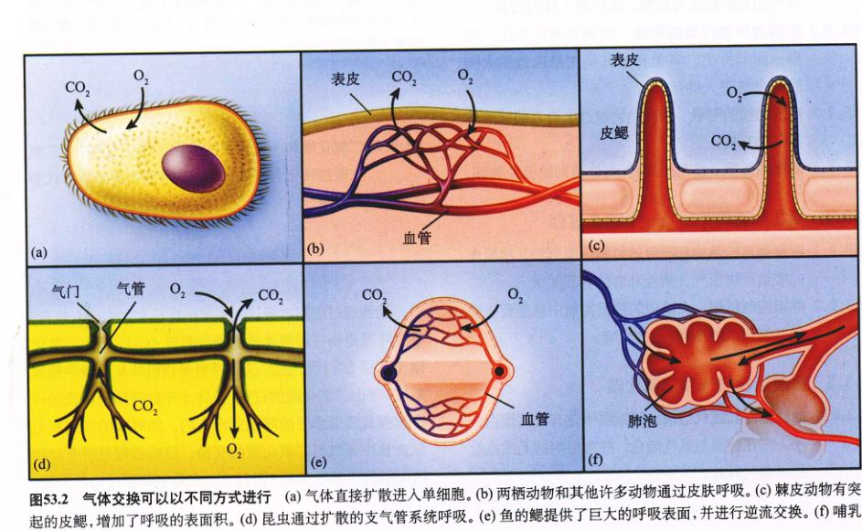
图 53.2 气体交换可以以不同方式进行 (a) 气体直接扩散进入单细胞。(b) 两栖动物和其他许多动物通过皮肤呼吸。(c) 棘皮动物有突起的皮鳃，增加了呼吸的表面积。(d) 昆虫通过扩散的支气管系统呼吸。(e) 鱼的鳃提供了巨大的呼吸表面，并进行逆流交换。(f) 哺乳动物肺部的气泡提供了巨大的呼吸表面，但不进行逆流交换。
Page 3 / 原始页码 1021
大气压和气体分压
干燥的空气含有 78.09% 的氮气 (N₂)、20.95% 的氧气、0.93% 的氩气和其他惰性气体，以及 0.03% 的二氧化碳。虽然随高度的增加分子数量递减（图 53.3），但是空气对流使空气成分保持不变。
想像有一个气柱从地面一直通到大气的上限。气柱内的所有气体分子都受到地球引力的作用，因此它们有质量，并且产生压力。如果这个气柱位于水平面上的水银 U 形管的上方，那么在标准状态下，它可以产生足够的压力以维持 760 mm 的水银高度（图 53.3）。测量大气压力的仪器叫做气压计，海平面上的大气压就是 760 mmHg。760 mmHg 同样又被称为一个大气压 (one atmosphere)。
总的大气压是由各类不同气体根据各自分子数在大气中所占的比重共同产生的。大气压中各个组分产生的压力称为分压 (partial pressure)，表示为 PN₂, PO₂, PCO₂ 等。各气体分压的总和就是总的大气压。对于干燥的空气，气体分压是由空气中各气体所占的比例乘以大气压计算得到的。因此，在海平面上，N₂、惰性气体、O₂、CO₂ 的分压如下：
PN₂ = 760 × 79.02% = 600.6 mmHg;
PO₂ = 760 × 20.95% = 159.2 mmHg;
PCO₂ = 760 × 0.03% = 0.2 mmHg。
人在海拔 6000 m 以上不能生活。虽然此处空气中仍含 20.95% 的氧气，但是大气压只有 380 mmHg，因此 PO₂ 只有 80 mmHg (380 × 20.95%)，仅为水平面上含氧量的一半。
53.2 水生脊椎动物用鳃进行呼吸
53.2.1 鳃是呼吸器官
水生动物的呼吸器官是鳃，鳃的伸展增加了气体扩散的表面积。有的鳃很简单，如棘皮动物的皮鳃 (papulae)（图 53.2c）；有的则复杂，如鱼类高度螺旋的鳃（图 53.2e）。和体表面积相比，鳃使扩散表面大大增加，使水生生物能从水中获得更多的氧。
外鳃 (external gill)（没有包含在体内）为气体交换提供了更大的表面积。脊椎动物中许多鱼类和两栖类的幼虫，同样还有终生生活在水中的成熟型的 (neotenic) 两栖类动物幼体，如蝾螈，它们的鳃都是这种类型的。外鳃的缺点之一是，它们必须要不断地移动，否则随着氧气进入鳃部血液，周围水中的氧气会被逐渐耗尽。可是高度分支的鳃又严重阻碍了运动，使这种呼吸类型只存在于小型动物体内。另一个缺点是，外鳃很容易遭受伤害。气体交换需要薄层上皮细胞和外层皮肤不相容。
其他水生动物进化出鳃室 (branchial chamber)，可以使水流过静止的鳃。例如，软体动物有向外开口的外套腔 (mantle cavity)，而鳃就位于腔内。外套腔的肌肉壁的收缩使水进入，随后又将它排出。甲壳类的鳃室位于机体和坚硬的外骨骼之间。腔内有鳃，并且开口于肢的下表面。附肢运动使水进入并通过鳃室，在鳃表面形成水流。
硬骨鱼的鳃
硬骨鱼的鳃位于口腔和鳃盖腔 (opercular cavity) 之间（图 53.4）。口腔随着嘴的张闭而开关，而鳃盖腔的开闭则是通过鳃盖的开闭运动。这两套腔像泵一样轮流开关，使水进入口中，经过鳃，又通过鳃盖 (operculum) 的开启流出体外。降低颌和口腔的底部时，水进入口腔，打开鳃盖时，水流经鳃进入鳃盖腔。鳃盖腔中的低压使水沿正确的方向流经鳃，并且还有一个“阀”确保这一过程的单向性。
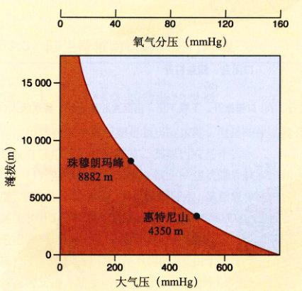
图 53.3 气压和海拔高度的关系 在山顶的高海拔地区，气压要比海平面上低得多。在世界最高峰——珠穆朗玛峰，其气压值仅仅是海平面上的三分之一。(1 mmHg = 0.133 kPa)
Page 4 / 原始页码 1022
一些不停游动的鱼，如金枪鱼，有特别稳定的鳃盖。这些鱼游动时口半张着，一直用填塞式 (ram ventilation) 的换气方式使水流经鳃部。然而多数硬骨鱼，都有灵活的鳃盖，可以作类似泵的抽吸运动。例如一种鲫鱼（属鲈形目，是 8~10 种海鱼的统称。译者注），它常常“骑”在鲨鱼身上，当鲨鱼游动时，鲫鱼采用填塞式换气方式；而当鲨鱼停止游动时，鲫鱼就依靠鳃盖的抽吸运动换气了。
鱼的头部两侧各有4个鳃弓 (gill arch)。每个鳃弓由两排鳃丝 (gill filament) 组成，其中每个鳃丝中都有薄薄的鳃片，它向外凸出和水接触（图 53.5）。水单向流经鳃片，而在鳃片内，血液的流动方向正好和水流方向相反。这一设计特称为逆流 (countercurrent flow)，它通过增加扩散路径中氧气的浓度梯度，提高 Fick 扩散定律中的 Δp，从而使血液迅速充氧。
逆流系统的优点在第 52 章中已经讨论过了，它还和温度调节有关，在图 53.6a 中也有介绍。缺氧的血液进入鳃片的后部，血液和反向的低氧量水相接触。但这时水中的含氧量高于血液，因此氧分子由水向血液扩散。当血液向鳃片的前部流动时，这时血液周围水中的含氧量仍旧高于血液，于是氧分子不停地从水中向血液中扩散。因此，在流动过程中，逆流系统始终保证在水和血液之间有一个浓度梯度。这就使氧气一直向鳃片扩散，当血液离开鳃时，血液中的含氧量和进入鳃部水中的含氧量相接近。
如果我们观察一下血液和水同向流动（也就是顺流）时所发生的情况，就能帮助我们理解这一概念。在鳃片前部，缺氧血和进入鳃部的水相接触，它们之间氧分子的浓度差很高（图 53.6b）。然而随着氧分子从水中进入血液，这一浓度差逐渐减小。当血液和水中的含氧量相等时，它们之间就不会发生氧分子的净交换。这种情况在氧气的运输能力就会大大低于逆流时的情况。事实上，鱼鳃就是氧分子在血液和水中逆流交换的系统，它是所有呼吸器官中最高效的一个。
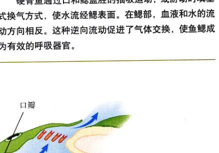
图 53.4 多数硬骨鱼如何呼吸 鳃位于口腔和鳃盖之间。呼吸分两步进行。(a) 口瓣张开，下颚下压，当鳃盖腔闭合时，将水吸入口腔。(b) 口瓣关闭，鳃盖打开，将鳃中的水排出。
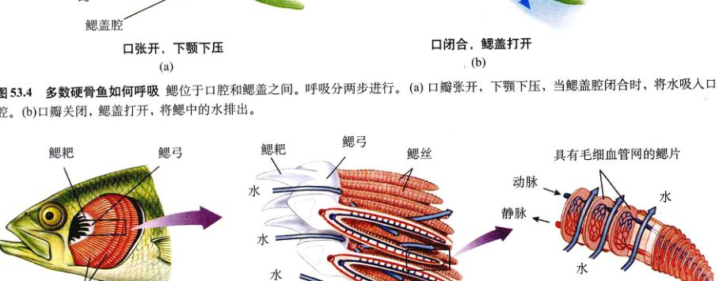
图 53.5 鱼鳃的结构 水从鳃弓流经鳃丝（图中从左至右）。水流的方向通常与鳃片中血液流动的方向相反。鳃的成功运作关键依赖于水和血液的逆向流动。
Page 5 / 原始页码 1023
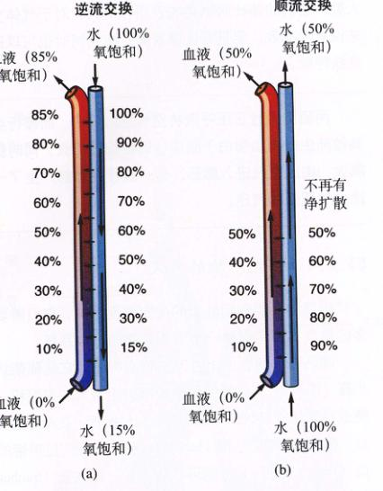
图 53.6 逆流交换 这个过程是自然界已知的效率最高的血液运输氧的方式。(a) 当血液和水反向流动时，开始时水和血液中氧的浓度差并不大，但是已经足以使氧从水中向血液扩散。随着越来越多的氧扩散到血液，血液中的氧浓度升高，但血液始终会遇到氧浓度更高的水。每一处水的氧浓度总会稍高于血液，因此扩散过程不断进行。在这个例子中，血液中的氧浓度达到了 85%。(b) 当血液和水同向流动时，起初水中的氧可以迅速地向血液中扩散，但是随着越来越多的氧扩散到血液中，扩散速度逐渐下降，直到最终水和血液中的含氧量达到平衡。在本例中，血液中的氧浓度不超过 50%。
鳃同时会为水的蒸发提供大的挥发面积。
陆生动物主要有两种呼吸器官减少挥发，虽然它们的呼吸效率都有所降低。首先是昆虫的气管 (tracheae)（参看第 46 章和图 53.2d）。气管由连接昆虫表面和体内各部分的充气通道组成。氧分子通过这些通道直接扩散进入细胞而不参与循环系统。在昆虫体内，将外界环境的空气用导管直接输送到细胞，这种方式效果非常好，原因是昆虫体积小，因而有较高的表面积-体积比。一旦它们体内的二氧化碳指标降到某一点，昆虫就会关闭气管的对外开口，以防止水分的散失。
陆生动物的另外一种主要呼吸器官是肺 (lung)（图 53.7）。空气经支气管进入肺部，因而减少了水分的蒸发；空气中充满了水蒸气，到达肺部后，可以在很薄的、潮湿的肺泡膜表面进行气体交换。除鸟类以外，所有陆生脊椎动物的肺都是利用均质的空气库 (uniform pool of air) 进行气体交换，后者直接与气体交换的表面接触。鳃的呼吸效率高是因为流经其中的水是单向流动的。肺则不同，它采用双向流动系统，吸入和呼出空气都经过同一路径。下面让我们来比较一下四类陆生脊椎动物肺的结构和功能。
53.3 陆生脊椎动物用肺进行呼吸
53.3.1 空气呼吸型动物的呼吸
虽然在水中呼吸鳃是相当高效的，但是陆生动物还是没有采用这个呼吸器官，其原因有两个：
(1) 空气浮力比水小：细小的膜状鳃片缺少结构强度，它依靠水的支持。如果鱼离开水，虽然氧分子浓度升高（水中 5~10 ml O₂/L，而空气为 210 ml O₂/L），但它还是很快窒息，这是因为它的鳃发生萎缩。这一萎缩极大地减少了扩散表面积。和鳃不同的是，由于机体提供了必要的结构支持，陆生动物的气管可以始终保持畅通。
(2) 水通过蒸发作用扩散到空气中：大气中的水蒸气很少达到饱和，除非在暴风雨之后。这样，陆生动物生活在空气包围之中，它体内的水分不停地向空气蒸发。
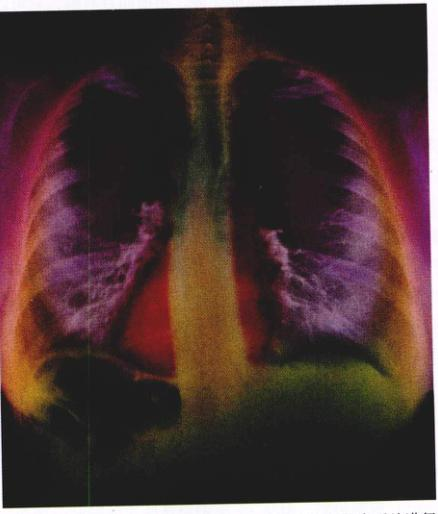
图 53.7 人的肺 为了更清晰地显示肺部，这张 X 光照片进行了增色处理。心脏是白色的垂直柱（食道）后的梨状物。
Page 6 / 原始页码 1024
53.3.2 两栖类和爬行类的呼吸
两栖类的肺是由原肠伸出的囊状突起形成的（图 53.8）。虽然这些囊由于折叠而增加了内表面的面积，但是两栖类肺中气体交换的有效面积要比其他陆生脊椎动物少得多。两栖动物的每个肺都和口腔后部或咽相连，并且肺的开口由声门控制开关。
两栖类的呼吸方式和其他陆生脊椎动物的不同。两栖类通过建立一个比大气压高的气压（正压）将空气压入肺中。它们先将空气吸入口腔，然后闭合口和鼻孔，空气即被压入肺中，这类似于将高压罐中的气体充入气球。这一过程叫做正压呼吸。人们口对口人工呼吸就是用这种方法使空气进入受害人的肺部的。
其他所有陆生脊椎动物的呼吸都是通过肺的膨胀，建立一个比大气压低的气压（负压），此过程叫做负压呼吸。这就像拉手风琴时，由于琴厢体积的膨胀而导致空气进入。在爬行类、鸟类和哺乳类体内，这一过程伴随着肌肉收缩产生的胸腔膨胀，稍后会对这一过程进行介绍。
两栖动物血液在肺中的充氧同时受皮肤呼吸的补充。皮肤呼吸是气体通过皮肤发生交换，而两栖类的皮肤湿润，并且高度的血管化。事实上，对于过冬的青蛙来说，由于它们的代谢缓慢，皮肤呼吸比肺呼吸更为重要。可是随着夏天青蛙代谢速度的加快，肺的功能逐渐变得重要。虽然不是很普遍，但是还有一些陆生两栖动物，比如，一种无肺蝾螈只用皮肤呼吸。
陆生爬行动物的皮肤干燥、粗糙而且有鳞，它可以防止机体失水，因此也不会有皮肤呼吸。爬行动物通过肌肉收缩来扩大它们的胸腔，产生负压呼吸而使空气进入肺。它们的肺比两栖类的表面积更大，对于气体交换来说更为高效。但是有证据表明，海蛇同时也可以进行皮肤呼吸。
53.3.3 哺乳动物的呼吸
恒温的鸟类和哺乳类的代谢速度更快，它们需要更多的氧气，因此需要一个更为高效的呼吸系统。
哺乳动物的肺由上百万的肺泡构成，它是葡萄状的小囊（图 53.9）。这就使每个肺都有相当大的表面积，以便进行气体交换。空气通过气管到达肺泡。吸入的空气经口、鼻，途经咽到达喉 (larynx)，在这里又穿过声带的开口（声门），进入 C 形的环状软骨管，即气管 (trachea)。气管又分支为左、右支气管，分别通向左、右肺叶，支气管 (bronchi) 可再细分为细支气管 (bronchiole)，它将空气一直运送到肺的尽头——肺泡 (alveoli)。肺泡由毛细血管网紧密包围，所有气体和血液之间的交换过程都通过肺泡壁而发生。
细支气管的分支和大量的肺泡一起，使呼吸表面积 (Fick 定律中的 A) 大大高于两栖类和爬行类。在人体内，每个肺叶有大约3亿个肺泡，它所产生的有效扩散总面积可达 80 m²，是人体表面积的 42 倍。哺乳动物的呼吸将会在随后的部分里作详细介绍。
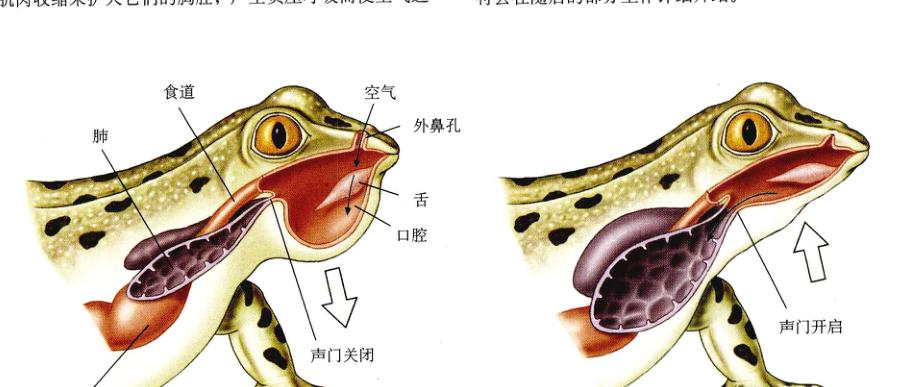
图 53.8 两栖动物的肺 青蛙的每个肺都是囊状内脏，并通过口腔中的正压，将空气压入肺中。其他陆生脊椎动物的肺能够提供一个巨大的气体交换表面积，而两栖动物的肺则缺少这一结构，因此它们的肺比其他脊椎动物的肺效率要低。
Page 7 / 原始页码 1025
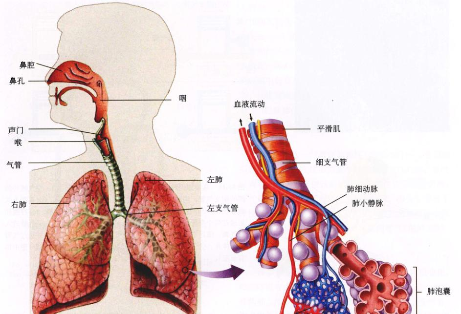
图 53.9 人的呼吸系统和哺乳动物的肺 哺乳动物的肺由于在细支气管末端面聚集有上百万的肺泡，因此有巨大的表面。这一结构使血液的气体交换相当高效。
53.3.4 鸟类的呼吸
鸟类的呼吸系统有着独特的结构，使其成为陆生脊椎动物中最为高效的一类。与哺乳动物的肺部具有盲状末端的肺泡不同，鸟类的肺部具有细小的副支气管 (parabronchi)，空气流过时发生气体交换（图 53.10a）。空气单向地通过副支气管，这与鱼鳃中水流的单向流动类似，而和其他陆生脊椎动物的双向气流流动显著不同。在其他陆生脊椎动物体内，吸入的新鲜空气和上一循环过程中未呼出的低氧量“旧”空气相混合。而在鸟类体内，只有新鲜空气进入肺的副支气管，而旧的空气则由另一条路径排出。
气流单向通过副支气管是通过鸟类独有的气囊而实现的（图 53.10b）。鸟类有两种气囊，前气囊和后气囊，在呼气时，它们受到压缩而使空气进入肺。
如果随空气一起进入鸟类的呼吸系统，我们会发现呼吸过程经过两个循环，其中每个循环都包括吸气和呼气，但是吸入的空气直到第二个循环时才被呼出。在吸气时，前后气囊都膨胀，使空气进入。然而吸入的空气只进入后气囊；前气囊中的气体从肺中排出（图 53.10c）。在呼气时，前气囊中的气体被呼出，而后气囊中的空气进入肺中。如此反复循环，使气体单向地进入肺，并且在第二个循环中被呼出。
气体的单向流动同样产生了另外一个呼吸效果：血液流经肺部的方向与气流成 90° 夹角。这种错流 (cross-current flow) 没有鱼鳃中夹角为 180° 的逆向流动那么高效，但是比哺乳动物的肺能吸入更多的空气。
Page 8 / 原始页码 1026
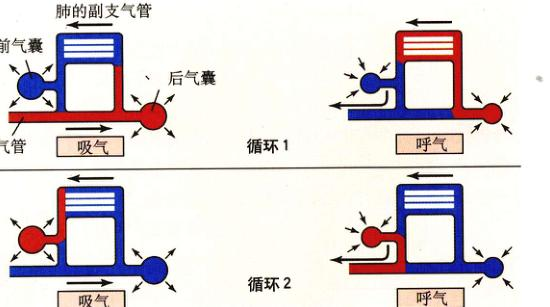
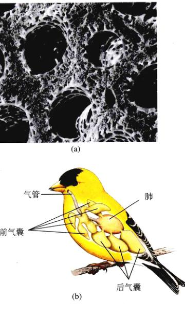
图 53.10 鸟类如何呼吸 (a) 家鸡肺部的横切片 (75×)。空气流经肺部的副支气管，同时，血液与气流方向成直角进行循环。(b) 鸟类有气囊系统，它分布在内脏和骨骼之间，并分为前气囊和后气囊。(c) 呼吸作用通过两个循环发生。循环1：吸入的空气（用红色表示）从气管进入后气囊，随后进入肺部。循环2：空气由肺部进入前气囊，并通过气管排出体外。空气始终沿相同方向流经肺，即由后气囊到前气囊（图中由右至左）。
正因为有了副支气管中气流的单向流动和血液的错流，麻雀才可以在 6000 m 的高空自由地飞翔，而体重相当并且代谢速率也相近的老鼠，在如此的高度却无法呼吸。
53.4 哺乳动物的呼吸是一个动态过程
53.4.1 呼吸器官的结构和呼吸的机制
在哺乳动物体内，吸入的气体通过气管、支气管和细支气管到达肺泡，并在这里进行气体交换。每一个肺泡都由厚度仅为一个细胞的上皮细胞构成，并且被同样是一个细胞厚的毛细血管所包围。在两个肺叶中，大约有 300 亿个肺泡，每个肺泡中大约有 100 条毛细血管。这样以来，每个肺泡就可以看作是被血液包围的微小气泡。由于肺泡中的空气和毛细血管中的血液之间只隔了两层细胞，空气和血液之间的距离只有 0.5~1.5 μm，因此 Fick 定律中的 d 值很小，使气体交换能够快速地进行。
由于气体交换，离开肺的血液中所含的氧气分压 (PO₂) 可达 100 mmHg。前面已经介绍过，PO₂ 描述了溶液中所溶解的氧气浓度——你可以把它想像成血浆的氧气浓度。由于离开肺的血液中的 PO₂ 接近肺泡中空气的 PO₂ (约 105 mmHg)，可见肺对血液的充氧效率是相当高的，但仍不完善。当气体在组织毛细血管中完成交换后，缺氧血回到右心房，其中的 PO₂ 大约40 mmHg。血液中 PO₂ 和二氧化碳浓度（表示为 PCO₂）的这一变化如图 53.11 所示。
每片肺的外表面都覆盖着一层薄的内脏胸膜 (visceral pleural membrane)。另外，体腔胸膜 (parietal pleural membrane) 附着在胸腔内壁上。这两个腔之间的空间，就叫做胸膜腔 (pleural cavity)。胸膜腔非常小，并且充满液体。这些液体将两层膜紧密联结起来，将肺固定在体腔中。这就像两块玻璃片间的液体可以使它们紧密结合一样。胸膜将两片肺独立包裹——如果其中一个膜出现了穿孔，另外一片肺仍能正常工作。
1) 呼吸的机制
在除了两栖类的所有陆生脊椎动物体内，空气通过负压作用（低于大气压）进入肺。根据 Boyle 定律 (Boyle's Law)，一定量的空气，当体积增加时其压强会相应地减小。在吸气过程中，胸腔扩大，同样，由于内脏胸膜和体腔胸膜部分黏合，使肺也发生膨胀，结果就发生了上述过程。当肺中的气压低于外界大气压时，空气就会进入肺中。
Page 9 / 原始页码 1027
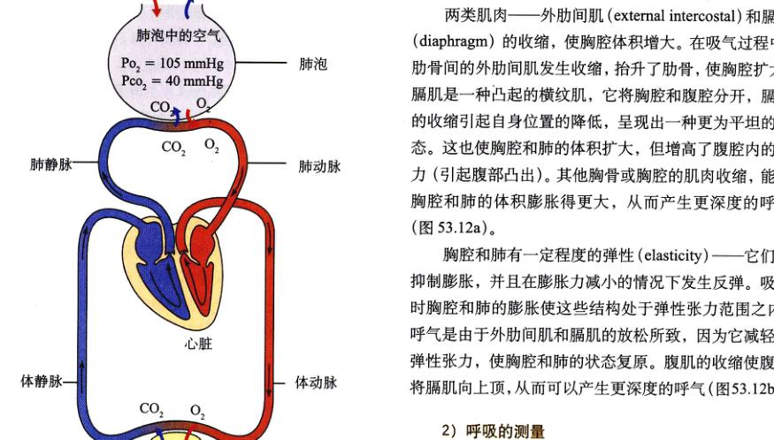
图 53.11 肺中毛细血管和体循环中的气体交换 经过肺部的气体交换，体动脉中含氧血的二氧化碳含量相对较低。当血液流经组织时，氧气扩散至组织中，体静脉中缺氧血的二氧化碳含量逐渐增高。
两类肌肉——外肋间肌 (external intercostal) 和膈肌 (diaphragm) 的收缩，使胸腔体积增大。在吸气过程中，肋骨间的外肋间肌发生收缩，抬升了肋骨，使胸腔扩大。膈肌是一种凸起的横纹肌，它将胸腔和腹腔分开，膈肌的收缩引起自身位置的降低，呈现出一种更为平坦的形态。这也使胸腔和肺的体积扩大，但增高了腹腔内的压力（引起腹部凸出）。其他胸骨或胸腔的肌肉收缩，能使胸腔和肺的体积膨胀得更大，从而产生更深度的呼吸（图 53.12a）。
胸腔和肺有一定程度的弹性 (elasticity)——它们能抑制膨胀，并且在膨胀力减小的情况下发生反弹。吸气时胸腔和肺的膨胀使这些结构处于弹性张力范围之内。呼气是由于外肋间肌和膈肌的放松所致，因为它减轻了弹性张力，使胸腔和肺的状态复原。腹肌的收缩使腹腔将膈肌向上顶，从而可以产生更深度的呼气（图 53.12b）。
2) 呼吸的测量
许多专业术语用来描述呼吸过程中肺的体积变化。每次呼吸有大约 500 ml 的潮气 (tidal volume) 进入或离开肺部。其中大约 150 ml 位于管状通道（气管、支气管、细支气管）中，在这些地方没有发生气体交换。这些解剖学无效腔 (anatomical dead space) 中，气体和新鲜空气在吸气时相混合。这就是为什么哺乳动物的呼吸没有机体的过度换气不能持续很长的时间。
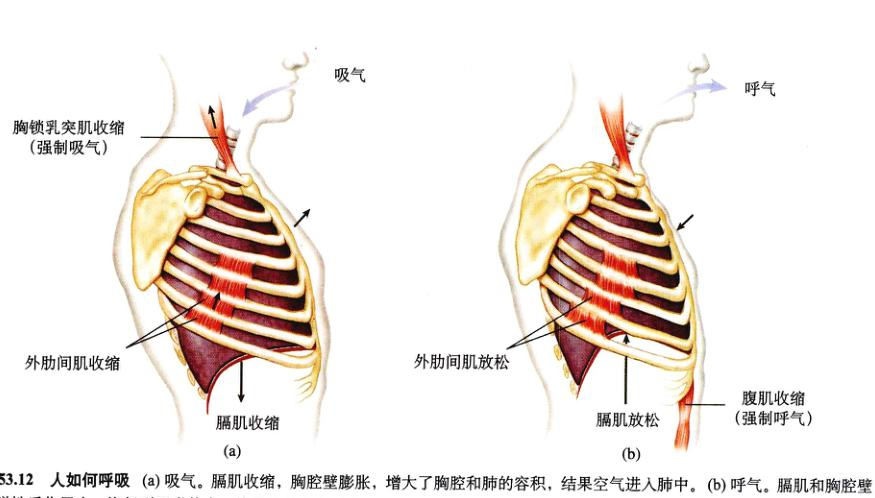
图 53.12 人如何呼吸 (a) 吸气。膈肌收缩，胸腔壁膨胀，增大了胸腔和肺的容积，结果空气进入肺中。(b) 呼气。膈肌和胸腔壁由于弹性反作用力，恢复到正常状态，使得胸腔容积减小，空气由肺通过气管排出体外。注意：吸气可以被呼吸附属肌肉（如胸锁乳突肌）的收缩而推动，呼气可以通过腹肌的收缩而推动。
Page 10 / 原始页码 1028
换气过度引起了血浆中 PCO₂ 的降低，以及血浆和 CSF 中 pH 的升高，从而耗竭呼吸调控反射。同样，这些因素还会引起大脑血管挛缩，导致头昏。如果在过度换气之后憋气，则可以持续更长的时间，这是因为此时 CO₂ 浓度的恢复需要更长的时间，而不是因为血液中 PO₂ 的升高。事实上，对于肺功能正常的机体来说，只有在高海拔地区 PO₂ 很低的情况下，PO₂ 才成为呼吸的主要刺激因素。低 PO₂ 同样可以刺激肺气肿患者的呼吸，这类患者的肺部受到严重损伤，血液中的 CO₂ 始终高于正常的范围。
在一次有力的最大吸气之后所能呼出的最大空气量称为肺活量 (vital capacity)。青年男性的这项指标平均为 4.6 L，而青年女性则为 3.1 L。这一指标在临床上意义重大，因为不正常的低肺活量可能意味着肺部的肺泡受到伤害。例如，肺气肿 (emphysema) 是吸烟引起的一种致命疾病，由于它严重破坏了肺泡，所以肺活量极大地降低。
人正常的呼吸速率和深度可保证血液适当地充氧并移走二氧化碳，以维持血液中 PO₂ 和 PCO₂ 在正常范围内。如果呼吸不足以维持血液中的气体指标（血液中 PCO₂ 的升高是最好的指标），机体就会产生肺换气不足 (hypoventilating)。如果呼吸速度超过了代谢的速率，会产生血液中 PCO₂ 不正常降低，机体就会产生肺换气过度 (hyperventilating)。令人难以理解的是，在适度锻炼时产生的呼吸加快，并不一定就是肺换气过度。这是因为锻炼中的呼吸加快是和代谢速率的加快相一致的，但是血液中的气体指标还是保持正常的。下一部分将要介绍呼吸如何同代谢保持协调。
53.4.2 呼吸控制机制
脑干的延髓（参见第 54 章）部有一个呼吸控制中心 (respiratory control center)，每一次呼吸都是由该中心的神经元启动的。这些神经元将刺激传递给膈肌和外肋间肌，引起它们的收缩，使胸腔膨大产生吸气作用。当这些神经元停止传送指令，参与吸气的肌肉变得松弛，并由此产生呼气作用。虽然参与呼吸的肌肉属于骨骼肌，但是它们是自动控制的。这一控制可以自动取消，如肺换气不足（憋气）和肺换气过度时。
机体需要合适的呼吸速率和深度，来使血液中氧和二氧化碳的含量维持在正常范围之内。这样一来，虽然自动的呼吸循环是通过脑干中的神经元控制，但是为了维持动态平衡，这些神经元必须受到血液中的 PO₂ 和 PCO₂ 的影响。你可以通过憋气来证明这一点。在憋气时，血液中的二氧化碳含量迅速升高，而氧气的含量降低。一段时间后，血液中气体的变化使呼吸的愿望变得相当强烈。这主要是由于血液中二氧化碳的含量 (PCO₂) 升高，而不是由于氧含量的下降。
PCO₂ 的升高使碳酸 (H₂CO₃) 增多，碳酸是通过二氧化碳和水的化合而形成的，从而降低了血液的 pH 值（碳酸可电离为 HCO₃⁻ 和 H⁺，因此增加了血液中 H⁺ 的浓度）。血液 pH 值的下降刺激了主动脉 (aortic) 和颈动脉体 (carotid body) 的神经元，而这些神经元又是主动脉和颈动脉的外周化学感受器 (peripheral chemoreceptor)。这些感受器产生神经冲动，传至延髓呼吸中枢，刺激加快呼吸。大脑中同样也有化学感受器，但是由于血液无法进入大脑，所以它们无法感受血液中 H⁺ 变化的刺激。然而片刻之后，血液中 PCO₂ 的升高同样会引起包围大脑的脑脊髓液 (CSF) pH 的降低。这一变化就会刺激大脑的中枢化学感受器 (central chemoreceptor)（图 53.13）。
当血液中的 PCO₂ 升高时，外周化学感受器立即刺激呼吸，但是这一迅速的刺激只占呼吸增加量的 30%。但当 PCO₂ 持续升高时，中枢化学感受器会刺激呼吸不断增加。呼吸速率的加快使血液中多余的 CO₂ 被清除，使其 pH 恢复到正常水平（图 53.14）。
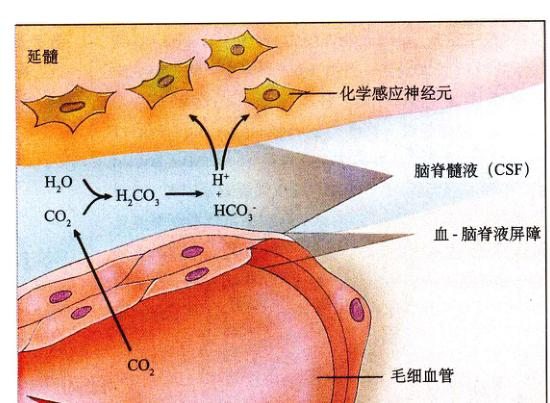
图 53.13 血液中的 CO₂ 对脑脊髓液 (CSF) 的影响 大脑中的化学敏感神经元可以感知 CSF 的 pH 变化，从而调节呼吸。
Page 11 / 原始页码 1029
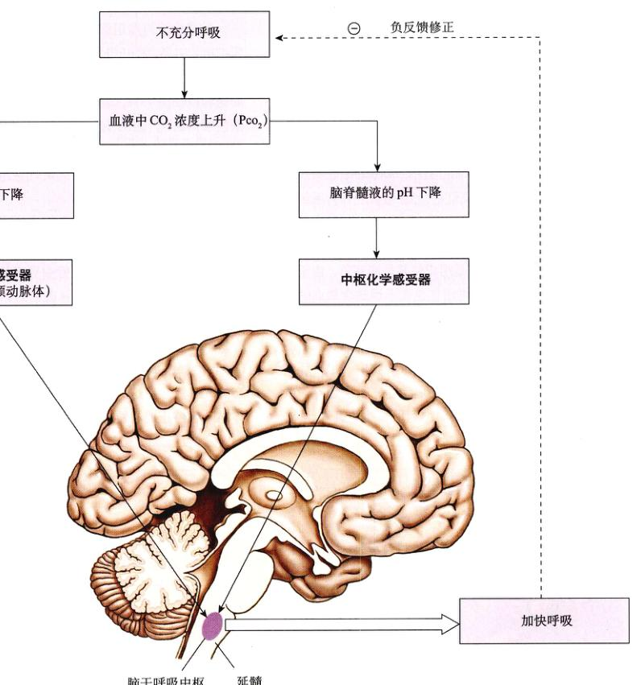
图 53.14 化学感受器对呼吸的调节 当不充分呼吸时，血液中二氧化碳含量升高。此时外周和中枢化学感受器感受到血液和脑脊髓液的 pH 值下降，随即刺激延髓的呼吸控制中枢，加快呼吸。结果，血液中的二氧化碳浓度恢复到正常水平，完成了这个负反馈循环。
Page 12 / 原始页码 1030
53.5 血液运输氧气和二氧化碳
53.5.1 血红蛋白和氧气运输
当氧气从肺泡向血液扩散时，它在体内的旅途便由此开始了。循环系统将氧气运送到组织各处，并且将组织各处的二氧化碳运出。氧气和二氧化碳的血液运输是生理学中一个有趣而重要的过程。
血浆中的含氧量直接由肺泡中空气的 PO₂ 决定，稍后会对此作详细说明。当肺功能正常时，离开肺的血浆中的含氧量在理论上应与空气中的 PO₂ 相同。可是由于氧气在水中的溶解度很小，血浆无法达到最大的氧气溶解量，即每升血浆溶 3 ml 氧气。然而整个血液循环的运输能力大约可达到每升血浆溶 200 ml 氧气。其中多数氧分子都和红细胞中的血红蛋白结合。
血红蛋白 (hemoglobin) 是由四条多肽链和4个血红素基 (heme group) 组成的蛋白质。每个血红素基的中央都含有一个铁原子，它可以和一个氧分子结合（图 53.15）。因此，每个血红蛋白分子可以结合4个氧分子。血红蛋白在肺部结合氧气，形成氧合血红蛋白 (oxyhemoglobin)，这个分子具有番茄汁一样的亮红色。当血液流经体内毛细血管时，一部分氧合血红素释放出氧分子，形成脱氧血红蛋白 (deoxyhemoglobin)。脱氧血红蛋白呈暗红色（献血者所献的静脉血的颜色），但是组织使其呈淡蓝色。由于这些颜色变化，绘图时，通常用红色表示运送含氧血的血管，用蓝色表示运输缺氧血的血管。
血红蛋白是所有脊椎动物体内长期参与氧气运输的蛋白质，同时它也存在于许多无脊椎动物中，包括环节动物、软体动物、棘皮动物、扁形动物，甚至还有一些原生动物。但是，许多无脊椎动物利用其他的氧气载体，如血蓝蛋白。在血蓝蛋白中，结合氧分子的是铜离子而不是亚铁离子。血蓝蛋白也不在血细胞内，而是溶解在循环体液（血淋巴）中。
氧气的运输
在海平面上，肺泡中空气 PO₂ 大约105 mmHg，比大气中的 PO₂ 要低，这是由于呼吸系统中的解剖学无效腔中“旧”的空气同吸入的新鲜空气相混合的结果。离开肺泡时血液中的 PO₂ 略低于此，大约为100 mmHg，这是由于肺功能的不完全高效，而使血浆中的氧气未达饱和。当血液中的 PO₂ 达100 mmHg 时，红细胞中大约有 97% 的血红蛋白以氧合血红蛋白的形式存在——氧合血红蛋白的饱和度为 97%。
随着血液流经组织毛细血管，氧分子就从血液向组织扩散。结果，离开组织的静脉血中的 PO₂ 降低到了（静止状态的机体）40 mmHg。在如此低的 PO₂ 下，血红蛋白的饱和度仅为 75%。表示这一过程的曲线称为氧合血红蛋白解离曲线（图 53.16）。对于静止状态的机体来说，有 22% (97%-75%) 的氧合血红蛋白在组织处释放了氧气。换句话说，大约有五分之一的氧气在组织处被释放，而血液中还保留有五分之四。
血液中保留如此大量的氧气具有重要的功能。它可以满足机体在运动时的氧气需要。在运动过程中，肌肉代谢加速，需要消耗毛细血管中更多的氧气，使静脉血中的 PO₂ 降低。例如，当静脉血中的 PO₂ 降到 20 mmHg 时，血红蛋白的饱和度仅为 35%（图 53.16）。由于动脉血中氧合血红蛋白的含量仍为 97%（运动中通气增加），O₂ 的释放量运动时可达 62% (97%-35%)，而不是静止状态的 22%。除了这一功能外，氧气的保存同样可以使机体在呼吸停止或心跳停止时存活 4~5 min。
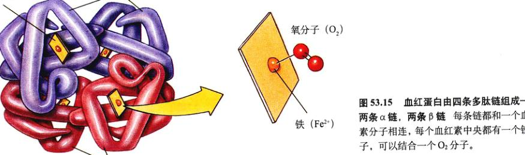
图 53.15 血红蛋白由四条多肽链组成——两条 α 链，两条 β 链，每条链都和一个血红素分子相连，每个血红素中央都有一个铁原子，可以结合一个 O₂ 分子。
Page 13 / 原始页码 1031
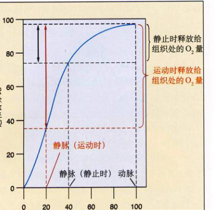
图 53.16 氧合血红蛋白解离曲线 血红蛋白在肺部结合氧气，含氧血随后通过动脉输送到体细胞。当氧分子离开血液，供给细胞呼吸之后，含氧较少的血液则进入静脉。在静止和运动时的动静脉血中含氧量的差值表示了在组织处所释放的氧分子的多少。
血液中的氧气运输还受其他因素的影响。代谢组织有氧呼吸时产生的 CO₂ 和 H₂O 结合，最终产生 HCO₃⁻ 和 H⁺，降低了血液的 pH 值。这一反应主要发生在红细胞中，同时 pH 值的降低也使血红蛋白和氧的结合能力下降，因此使其更容易释放氧气。血红蛋白同氧气的结合能力受 pH 值的影响表现为 Bohr 效应，即下图中氧合血红蛋白解离曲线上的变化（图 53.17a）。温度的升高对血红蛋白结合氧的能力也有类似的影响（图 53.17b）。由于在运动中，骨骼肌更容易产生二氧化碳，而且运动的肌肉同时会产生热量，因此血液释放出的氧气比例更高。
53.5.2 二氧化碳和一氧化氮的运输
毛细血管系统将氧气输送到组织各处，并移走二氧化碳。血液中大约有 8% 的二氧化碳溶解在血浆中；另外 20% 与血红蛋白结合。（由于 CO₂ 和血红蛋白的蛋白质部分结合，而不是和铁原子结合，因此它不与氧气竞争）剩余 72% 的 CO₂ 扩散在红细胞中，并且在碳酸酐酶催化 CO₂ 和水的反应中，生成碳酸 (H₂CO₃)。碳酸又解离成碳酸氢根离子 (HCO₃⁻) 和氢离子 (H⁺)。H⁺ 和脱氧血红蛋白结合，并且碳酸氢根离子通过和氯离子的交换作用 (1:1，又称氯离子转移)，离开红细胞进入血浆。这一反应使血浆中的 CO₂ 大量减少，从而促进更多的 CO₂ 从周围组织中向血浆中扩散（图 53.18）。碳酸的生成同样对于维持血液中的酸碱平衡意义重大，因为碳酸氢根离子是血浆的主要缓冲剂。
血液通过以下方式实现 CO₂ 的运输。肺泡空气中较低的 PCO₂ 使碳酸酐酶的反应逆向进行，将 H₂CO₃ 转化为 H₂O 和 CO₂（图 53.18）。二氧化碳从红细胞中扩散出进入肺泡，这样它便由随后的呼气作用排出体外（图 53.19）。

图 53.17 pH 值和温度对氧合血红蛋白解离曲线的影响 血液 pH 值降低 (a) 和较高的温度 (b) 使氧合血红蛋白的解离曲线右移，促进了氧气的释放。图中氧合血红蛋白的饱和百分比从 60% 降为 40% 就反映了这一点，表明另外有 20% 的氧分子被释放给组织。
Page 14 / 原始页码 1032
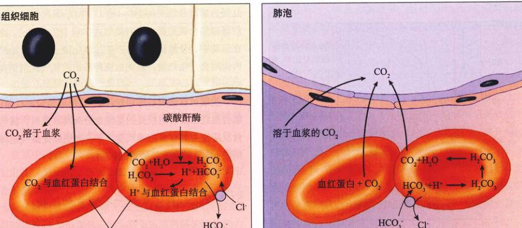
图 53.18 血液中二氧化碳的运输 CO₂ 通过三种方式进行运输：溶解在血浆中，与血红蛋白的蛋白质部分结合，在红细胞中形成碳酸或碳酸氢盐。当血液流经肺泡毛细血管时，这些反应逆向进行，生成 CO₂，并将其呼出。
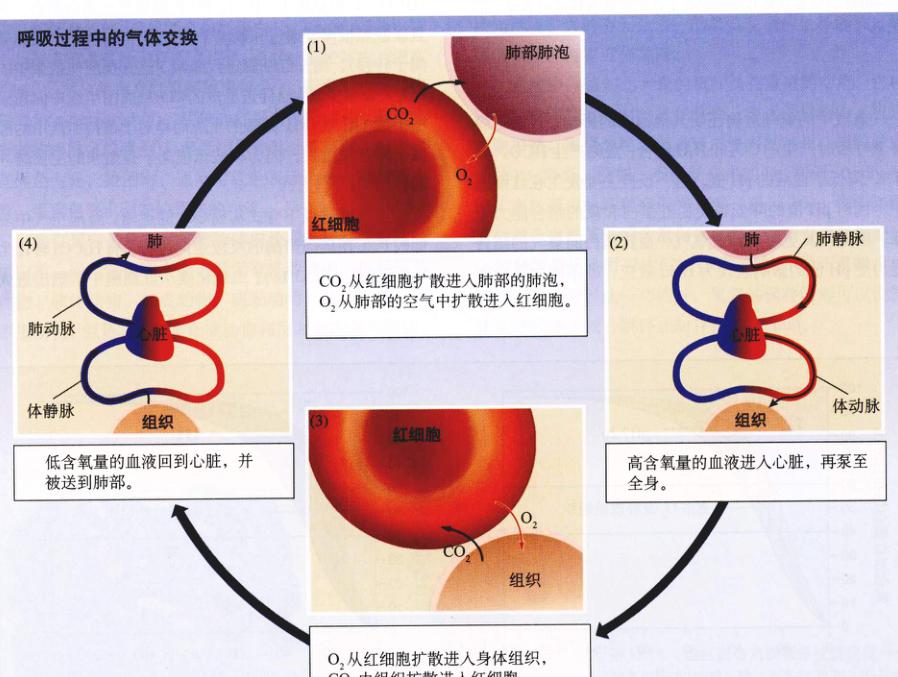
图 53.19 呼吸作用气体交换概述
Page 15 / 原始页码 1033
一氧化氮的运输
血红蛋白同样可以结合和释放一氧化氮 (NO) 气体。虽然一氧化氮是大气中的一种有害气体，但是它在体内有重要的生理作用，并且对许多细胞的形态和功能都有影响。比如，如果 NO 存在于血管中，周围的肌肉细胞会松弛，从而引起血管膨胀（参看第7章和第52章）。因此血液流动和血压都受到血流中 NO 含量的控制。
目前有一种假说认为，血红蛋白通过一种称为超一氧化氮的特殊方式实现对 NO 的运输。在该形式中，NO 获得了另外一个电子，可以和血红蛋白的半胱氨酸成键。在肺部，血红蛋白不但可以释放二氧化碳、结合氧，同样还可以以超一氧化氮的形式结合 NO。在组织的血管处，血红蛋白不仅可以释放氧，结合二氧化碳，同样还可以和一氧化氮一起完成两项功能。为了增加血液流量，血红蛋白可以向血液中释放以超一氧化氮形式存在的 NO，由于 NO 的松弛作用，血管发生膨胀。或者，血红蛋白由于释放氧分子而空出的铁原子和多余的 NO 结合，导致血管收缩。当血细胞到达肺时，血红蛋白释放二氧化碳，以及与铁原子结合的 NO。随后血红蛋白又结合氧和超一氧化氮，继续进行血液循环。
Page 16 / 原始页码 1034
小 结
53.1 呼吸涉及气体扩散
- 根据 Fick 定律的描述，影响扩散速率的因素有表面积浓度梯度和扩散距离。
- 动物通过增加呼吸表面积，增大膜两侧的浓度梯度，或减少扩散距离，可使得扩散速率最大化。
53.2 水生脊椎动物用鳃进行呼吸
- 当水流经鳃片时，它和血液的流动方向恰好相反，使液体间的浓度差达最大，也就使气体的扩散达最大化。
53.3 陆生脊椎动物用肺进行呼吸
- 爬行动物、鸟类和哺乳动物利用负压力进行呼吸；通过使肺容积扩大，将空气吸入肺中。
- 哺乳动物的肺由上百万肺泡组成，呼吸就发生在肺泡里，这一结构相当高效，但是由于通过同一条通气管进行吸气和呼气，进入肺的新鲜空气会和部分旧的空气发生混合。
53.4 哺乳动物的呼吸是一个动态过程
- 肺表面覆有一层湿膜，并和胸腔内的湿膜相黏合，因此肌肉收缩可以使胸和肺同时膨胀。
- 呼吸受大脑延髓的中枢控制。位于大动脉和颈动脉上的化学感应受体，可以探测到血液中的 CO₂ 含量的上升和 pH 值的下降，并刺激呼吸的加快。
53.5 血液运输氧气和二氧化碳
- 血红蛋白在肺中结合氧气，氧合血红蛋白在组织处的毛细血管释放氧分子。
- 二氧化碳在向肺部运输过程中，会和水结合。
问 题
- 干燥空气中氧气和二氧化碳所占的百分比大约为多少？
- 为什么只有非常小的有机体才能通过体表的直接扩散满足机体的呼吸需要？
- 什么是逆流作用，它是如何使鱼鳃成为最高效的呼吸器官的？
- 两栖动物是如何将空气吸入肺中的？其他陆生脊椎动物又是怎样将空气吸入肺中的？
- 鸟类肺的哪两条特征使得它成为最高效的陆上呼吸系统？
- 肺是如何和胸腔相结合，并且被支持的？
- 大脑如何控制吸气和呼气？外周和中枢化学感应受体如何影响大脑对呼吸的控制？
- 血液中的多数二氧化碳以什么形式进行运输？这些分子是在哪里，通过什么方式产生的？
媒体资源
- 质膜结构
- 技能测验：气体交换的变异
- 实践活动：呼吸管道
- 玻意耳定律
- 呼吸
- 吸烟的危害
- 人的呼吸
- 紊乱
- 实践活动：血红蛋白模块
- 血红蛋白
- 气体交换